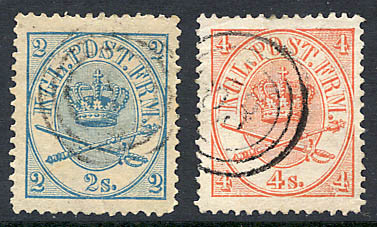
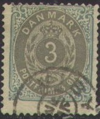
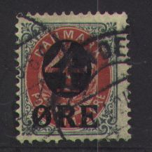
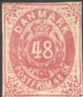
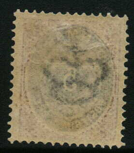

Return To Catalogue - Denmark 1851-1863 - Denmark 1882-1920 - Miscellaneous - Danish West Indies - Bypost (local post)
Curreny 96 Skilling = 1 Rigsbankdaler, after 1875 100 Øre = 1 Krone
Capital Kopenhagen
Note: on my website many of the
pictures can not be seen! They are of course present in the
catalogue;
contact me if you want to purchase it.



2 s blue 3 s lilac 4 s red 8 s brown 16 s olive
These stamps are perforated 13, 13 x 12 1/2, 13 1/2 x 13 or 12 1/2.
Value of the stamps |
|||
vc = very common c = common * = not so common ** = uncommon |
*** = very uncommon R = rare RR = very rare RRR = extremely rare |
||
| Value | Unused | Used | Remarks |
| 2 s | *** | ** | |
| 3 s | *** | *** | |
| 4 s | *** | c | |
| 8 s | RR | *** | |
| 16 s | RR | *** | |
Imperforate 4 s stamps were sold at the post office at some stage. Other imperforate stamps are from remainders (brought in 1912 onto the market). Also, perforated stamps with their perforation cut off exist.
Reprints exist of all values, made in 1886 (no watermark and imperforate). If anybody posesses information about these reprints, please contact me!
Typical cancel, three rings:
I have seen postal stationary in the same design (16 s olive).
Some reprints "NYTRYK" of the 4 s value made for the
'Hafnia 76'
Value in Sk(illing)


2 s grey and blue 3 s grey and lilac 4 s grey and red 8 s grey and brown 16 s grey and green 48 s brown and lilac
Reprints exist of all values. If anybody posesses information about these reprints, please contact me!
Value of the stamps |
|||
vc = very common c = common * = not so common ** = uncommon |
*** = very uncommon R = rare RR = very rare RRR = extremely rare |
||
| Value | Unused | Used | Remarks |
| 2 s | * | * | |
| 3 s | *** | *** | |
| 4 s | *** | c | |
| 8 s | *** | *** | |
| 16 s | *** | *** | |
| 48 s | RR | R | |
Value in Ore (1875)



3 o blue and grey 4 o grey and blue 5 o red and blue 8 o grey and red 12 o grey and red 16 o grey and brown 20 o red and grey 25 o grey and green 50 o brown and lilac 100 o grey and yellow
These stamps have perforation 14 x 13 1/2 or 12 1/2.
Value of the stamps |
|||
vc = very common c = common * = not so common ** = uncommon |
*** = very uncommon R = rare RR = very rare RRR = extremely rare |
||
| Value | Unused | Used | Remarks |
| 3 o | c | c | |
| 4 o | c | vc | |
| 5 o | ** | ** | 1879 |
| 8 o | c | vc | |
| 12 o | * | vc | |
| 16 o | * | c | |
| 20 o | *** | * | |
| 25 o | * | c | |
| 50 o | * | c | |
| 100 o | * | c | |
Surcharged


'4 ORE' on 8 o grey and red (1904) '35 ORE' (blue) on 16 o grey and brown (1912) '35 ORE' (blue) on 20 o red and grey (1912) '80 ORE' on 12 o grey and red (1915)
Value of the stamps |
|||
vc = very common c = common * = not so common ** = uncommon |
*** = very uncommon R = rare RR = very rare RRR = extremely rare |
||
| Value | Unused | Used | Remarks |
| 4 o on 8 o | c | c | |
| 35 o on 16 o | * | * | |
| 35 o on 20 o | * | * | |
| 80 o on 12 o | *** | *** | |
Typical cancels:

Postcards in the same design:
(Reduced size)
I have seen the values (all printed in one colour only!) 2 sk blue, 4 sk red, 3 o grey, 4 o blue, 6 o brown, 8 o red and 10 o green. Also a 4 o blue with a black circular '5' overprint and a small '5' on the small '4'.

All these stamps have a watermark 'crown':

Imperforate reprint of the 100 a value from 1977.
For stamps of Denmark from 1882 to 1920, click here.